- Category
- Role
- Tools
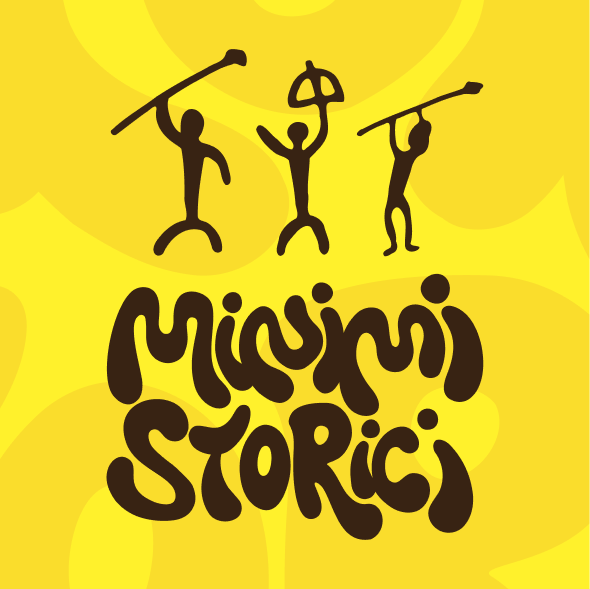
Tecnichestile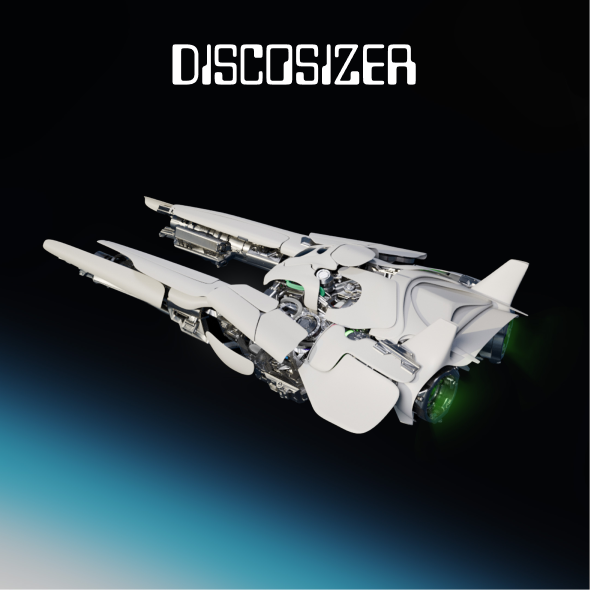
Graphic Design, Motion Graphics & Social CampaignCommercial Campaign / Social Media Design & Motion Graphics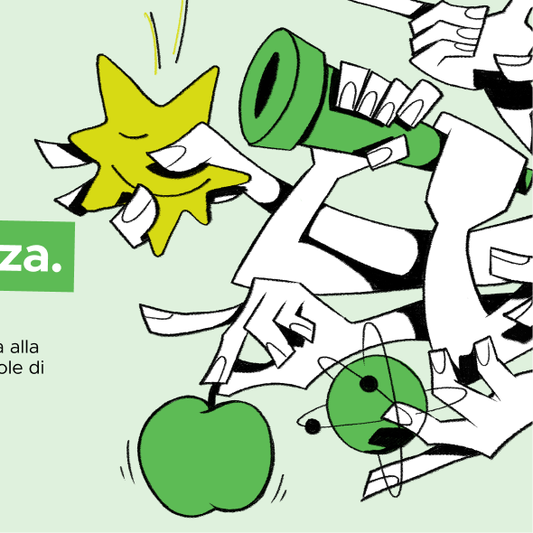
Tecnichestile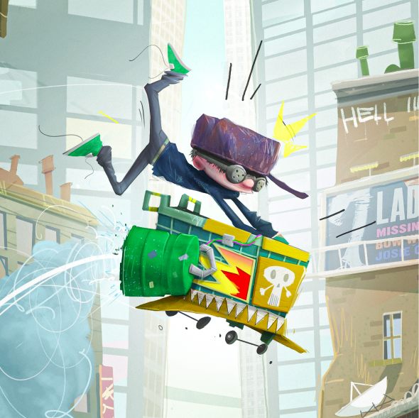
Stylized Animation VisDevType: Personal Project / Animated Feature Concept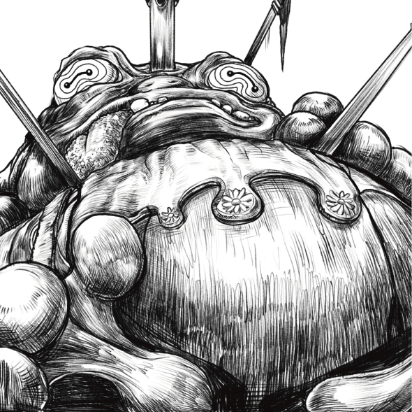
Annual Calendar Illustration SeriesEditorial / Calendar Illustration Series & Character Design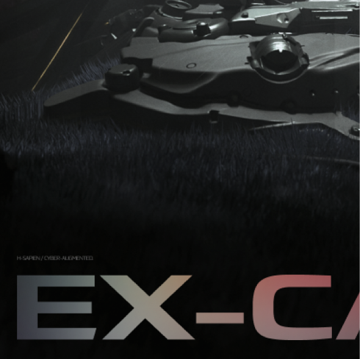
Tecnichestile
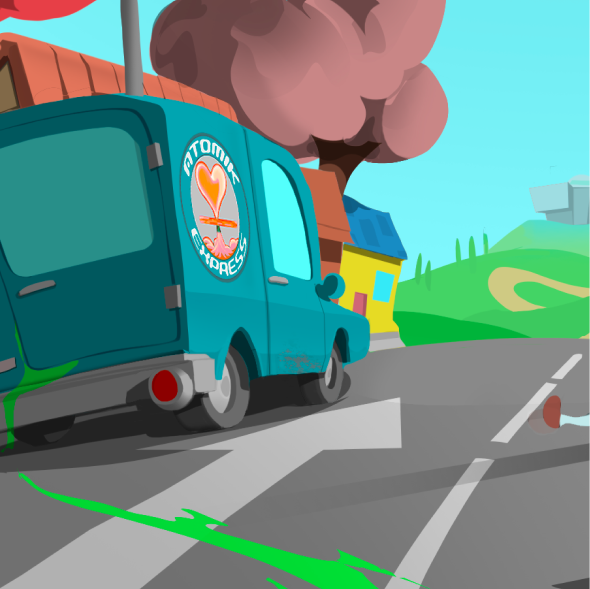
Tecnichestile12Visual Development for AnimationVisual Development ArtistBackground Painter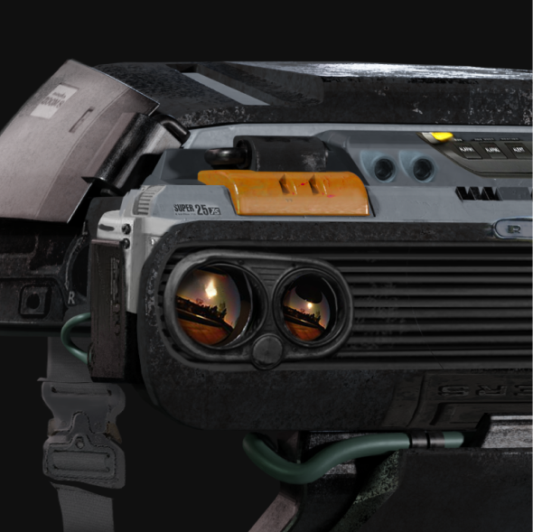
Tecnichestile14Character Concept ArtCharacter Concept ArtistVisual Development Artist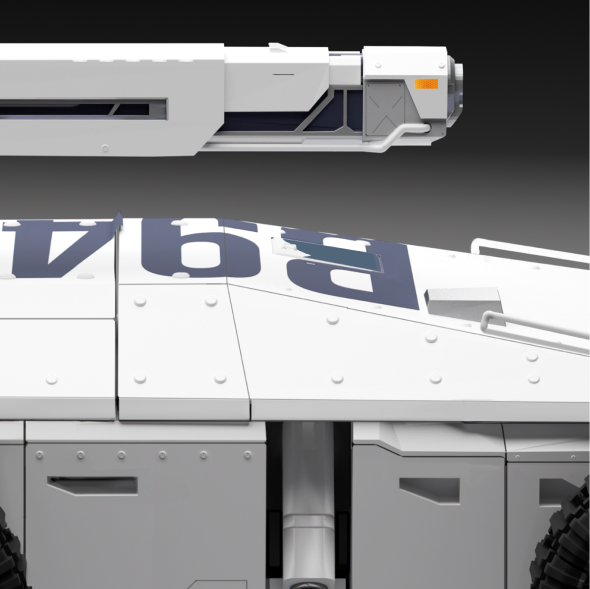
TecnichePersonal IP / Sci-Fi Character & Vehicle Design05Concept DesignHard Surface Concept ArtVehicle Design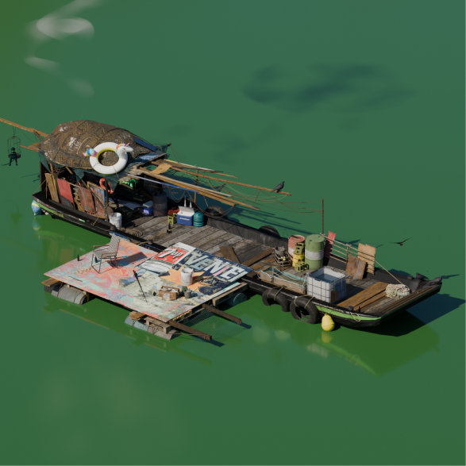
Tecnichestile10- Tecnichestile07Environment Concept Art & WorldbuildingEnvironment Concept ArtistWorldbuilder
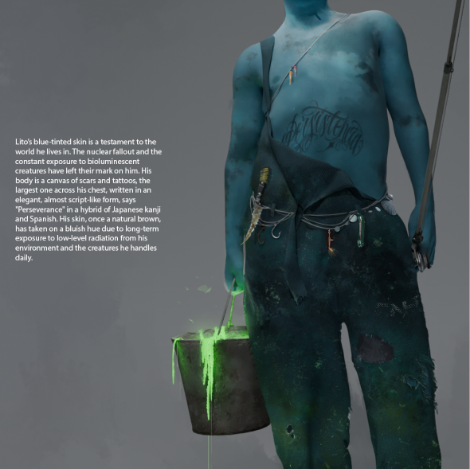
Tecnichestile09Character & Creature Concept ArtCharacter & Prop Concept Artist- Tecnichestile11Hard Surface Concept Art & Graphic IPHard Surface Concept ArtistGraphic Designer
- Tecnichestile02Web IllustrationsIllustratorVisual Communicator
- Graphic Design, Motion Graphics & Social CampaignCommercial Campaign / Social Media Design & Motion Graphics03Web IllustrationsGraphic DesignerMotion Artist
- Tecnichestile01Brand Identity & Motion DesignBrand DesignerMotion Graphics Artist
- Stylized Animation VisDevType: Personal Project / Animated Feature Concept04Animation VisDevVisual Development ArtistCharacter & Prop Designer
- Annual Calendar Illustration SeriesEditorial / Calendar Illustration Series & Character Design06Editorial Illustration & Character DesignIllustratorCharacter Designer
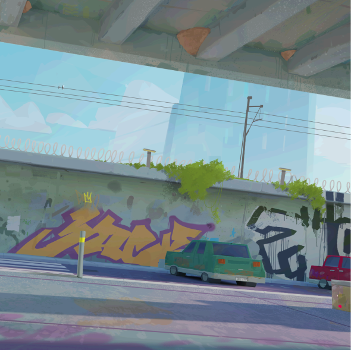
Tecnichestile08Animation Background DesignBackground PainterEnvironment Artist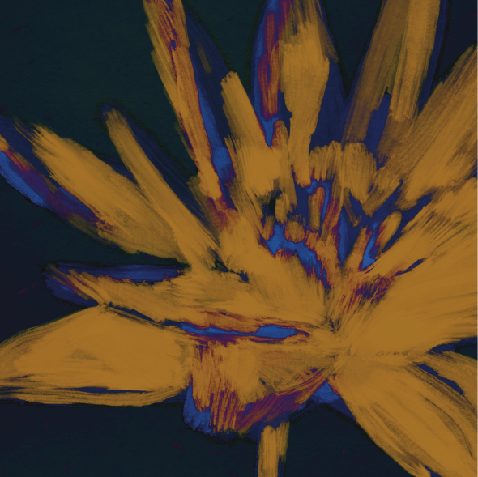
Tecnichestile13Music Packaging & Graphic DesignGraphic DesignerArt Director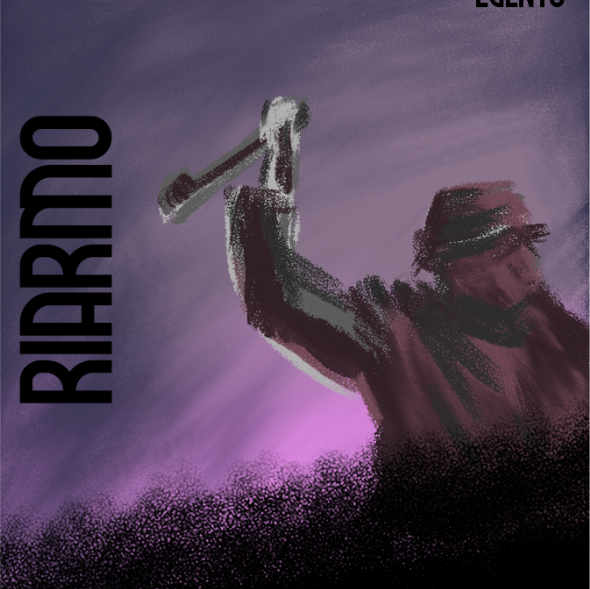
Tecnichestile15Card Game Art & Graphic DesignGame IllustratorGraphic Designer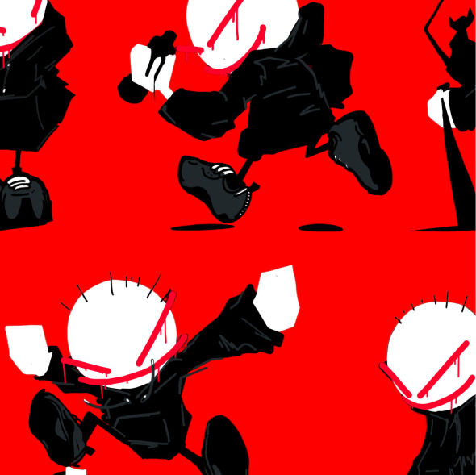
Tecnichestile16Environment Concept Art & Asset DesignEnvironment Concept Artist
About me